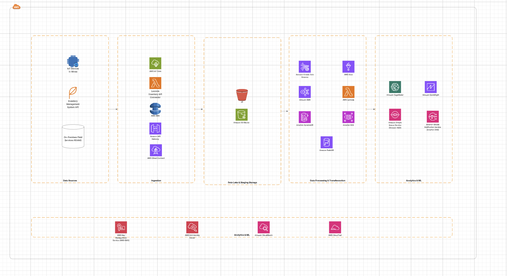

Mine-IT Data Platform - AWS Architecture Diagram
This page displays the AWS architecture diagram for the Mine-IT Predictive Maintenance data platform.

AWS Architecture Diagram
This page displays the AWS architecture diagram for the Mine-IT Predictive Maintenance data platform.